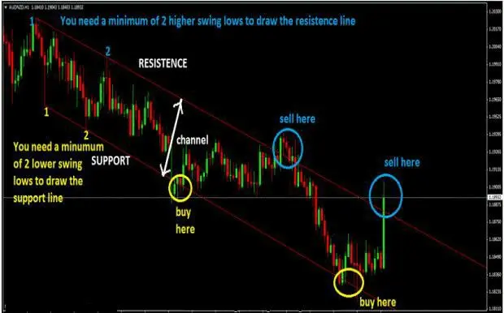
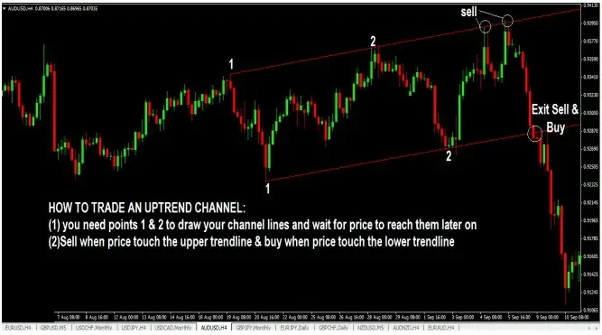
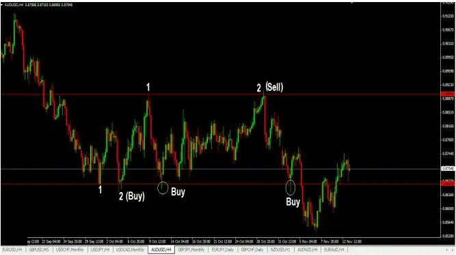

CHANNELS TRADING
The price channel is the path that price takes and the space that it encloses. Support and resistance serve as the
cornerstones on which a channel is formed.
I'm not sure why price behaves that way, but think of it as supply and demand in action.
Currently There Are Three Main Categories Of Channels.
1. The horizontal/sideways channel.
2. The downtrend channel,
3. The uptrend channel
A downtrend channel looks like this, and here's how to trade it:

An uptrend channel looks like this, and this example demonstrates how to trade it:

What a sideways channel looks like and how to trade it are as follows:

Sideways channels (or horizontal channels) differ slightly from uptrend and downtrend channels in that you need
two points to draw trendlines in uptrend and downtrend channels, and you must wait for price to touch those
trendlines later before entering a trade because the trend lines are at an angle.
However, with sideways/horizontal channels, you may really begin trading the setup at point #2, which can serve as
a level of support or resistance depending on whether a prior level of resistance or support is already apparent and
you can expect price to retrace from those levels. When such setups occur, look for reversal candlesticks to buy or
sell.
The Following Are Some Basic Guidelines For Trading Channels
☐ When buying or selling on the opposite
side of the channel, you must wait until the price reaches the opposite end of the channel before taking profits or
closing the position.
☐ If your order touched the channel and shown signals of rejection, place your stop loss just outside the channel,
just above the candlestick's high (for a sell order) or just below the candlestick's low (for a buy order). This
candlestick has the option of becoming reversible.
☐ Since the price is in the center of the channel for a profitable transaction, you may also choose to take half the
profits off.